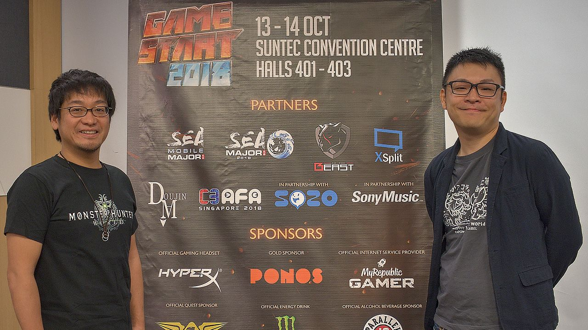

monster hunter
Monster Hunter: World se considera una entrega principal de la serie Monster Hunter, según el productor del juego Ryozo Tsujimoto y el co-director Yuya Tokuda. Tokuda y el codirector Kaname Fujioka, también fueron directores de Monster Hunter 4 y Monster Hunter 4 Ultimate. El desarrollo de World comenzó unos tres años antes de la revelación en la E3 2017, después de un año de lluvias de ideas sobre, cuál sería el próximo juego principal de la serie. Con la serie de más de una década, Capcom revaluó dónde querían re-tomar la serie, y se dio cuenta de que con las capacidades de hardware de las nuevas consolas, podían realizar una visión diferente en comparación con las vistas en computadoras personales.

Tsujimoto dijo que los juegos del pasado típicamente tenían reglas arcanas, y la estructura del área zonal hacía que cada zona se sintiera aislada, y querían cambiar ese enfoque. También han querido implementar mundos vivos y ecosistemas, con complejas interacciones de la inteligencia artificial, entre los monstruos y el medio ambiente, pero habían sido limitados en el pasado por el hardware de las consolas. El equipo determinó que perseguirían mundos altamente detallados que se sintieran realistas, eliminando el enfoque desconectado del mapa zonal. Esto creó un "efecto dominó" de cambios en el juego; por ejemplo, la eliminación de las pantallas de carga, significaba que los jugadores no podían usar la táctica de saltar a una zona diferente para sanar con seguridad, y por lo tanto les permitía a los jugadores beber pociones de sanación mientras caminaban. Tokuda señaló que con estos cambios, el ritmo del juego también se hizo más rápido. Para los monstruos, que implementan un conjunto de reglas, que los monstruos seguirían, pero no recurrieron a ningún tipo de evento con guiones. Esto a menudo crea un comportamiento de monstruo inesperado al probar o demostrar el juego a audiencias públicas.
Mientras trabajaban para lograr esto, Capcom descubrió que este mundo más abierto sería algo que apreciarían mejor las audiencias occidentales. La serie Monster Hunter generalmente había sufrido en las ventas en los mercados occidentales debido a la complejidad del juego, las altas curvas de aprendizaje y la preferencia de los juegos de consola y PC del público occidental en comparación con la popularidad de los juegos portátiles en Japón. El equipo consideró que el nuevo enfoque del juego sería algo que encajaría bien con los mercados occidentales, y comenzaría a adoptar el juego para incluir más estándares occidentales en controles y diseño de interfaz. También buscaron proporcionar más información de tutorial y hacer con las voces tramos completos, para evitar cuadros de diálogo que no se podían usar y que se habían usado en el pasado. Con estos cambios vino la decisión de hacer del juego un lanzamiento mundial, con cambios entre regiones, ya que creían que podrían atraer a más jugadores occidentales con los cambios en el juego que han realizado. Tjusimoto y Tokuda reconocieron que Monster Hunter: World será el primer título de Monster Hunter que muchos en las regiones occidentales probablemente jugarán, por lo que querían asegurarse de que el juego fuera accesible para esos jugadores, sin haber jugado ninguno de los títulos anteriores. También fueron conscientes de las críticas pasadas de que los juegos eran muy difíciles de aprender, aunque proporcionaron una experiencia gratificante una vez que se aprendieron, por lo que se propusieron incluir medios para ayudar a facilitar la curva de aprendizaje y proporcionar más información al jugador inicial.

Fujioka respondió a algunas críticas iniciales de los cambios al juego impulsados por Occidente que no intentaban hacer el juego más fácil, solo para impulsar las ventas diciendo: "No estamos tomando las cosas que la gente en el oeste odia y las arreglamos para hacer que los jugadores occidentales lo compren. La gente a veces hace esa suposición, o tienen ese miedo, pero ese no es el caso en absoluto". Continuó diciendo que algunos de los cambios que parecían favorecer a las audiencias occidentales eran necesarios por los mapas altamente interconectados, y que "la nueva jugabilidad tiene que coincidir con el nuevo concepto o de lo contrario sería un desastre". Tokuda dijo que no estaban simplificando el juego, sino que "es más que queremos tener este gran juego de acción central, donde los jugadores observan el comportamiento de los monstruos y luego aprendan a aprovecharlo y manipularlo para ayudarlos a cazarlos. hacerlo de modo que si cometen errores, no sientan que es injusto sino que piensen que es un error suyo y que deben crecer y aprender". La mayoría de los cambios realizados fueron específicamente para reducir la curva de dificultad, y para facilitar que los nuevos jugadores capten los conceptos del juego, pero sin cambiar la dificultad central. Tsujimoto también dijo que como han estado trabajando en la serie durante más de una década, están al tanto de, que es lo que los fanáticos esperan de un título de Monster Hunter. diciendo "queremos que los fanáticos de Monster Hunter sientan que este es un juego de Monster Hunter cuando lo jueguen, hasta el final".